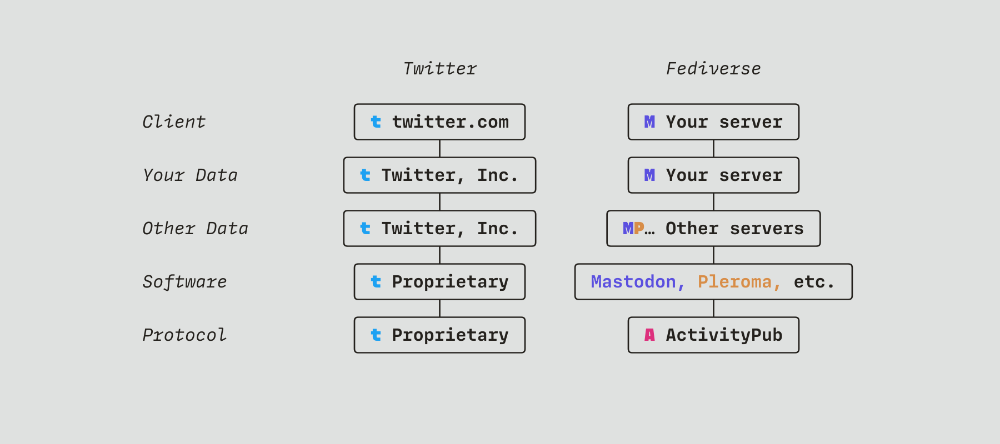
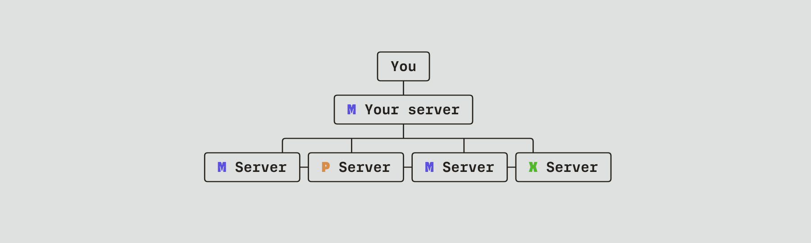

I’ll put this upfront: I’m not an expert. I’ve been casually using Mastodon for a few years (more or less), as a reader more than a contributor. I could be wrong, or oversimplifying; please correct me if you think it’s needed.
An intro to Mastodon (for Twitter refugees)
So, you’re worried about where Twitter is going, and people seem to be talking about this other thing where there are no ads and your timeline is chronological. But it isn’t as simple as making a Mastodon account and joining your friends. So how does it actually work?
Well, it’s more complicated than Twitter because Twitter is proprietary: there’s one place your data can live (twitter.com), one set of software running on Twitter’s own servers, and one big ‘town square’ where everyone — your friends, your favourite celebrities, weird crypto assholes, and literal nazis — hangs out.
Mastodon is part of a decentralised alternative, known as the ‘fediverse’, and that means all those layers of Twitter’s proprietary tech stack suddenly become options you get to choose from. That choice is ultimately a great thing, but upfront, it’s also a huge barrier to entry.

Simple vs Open · Twitter doesn’t need you to understand how it works, because you can’t change anything. The fediverse is more complex because it gives you options.
Choosing a Server
Probably the first decision you’ll be faced with is picking a server. Rather than Twitter, where Twitter, Inc. is the only option, Mastodon is distributed among thousands of servers (more accurately ‘instances’, as you’ll sometimes hear them called), which can be run by anyone.
The servers talk to each other, so your choice doesn’t affect who you can and can’t follow. But your home server is where your data lives, where your timeline is, and also a community — each server has a ‘local timeline’ as well as your own personal feed, so picking a place that’s not too busy and has some shared values is generally a good idea. It’s also good to know who your server’s admin(s) will be before you sign up — they decide and enforce the rules, and usually they pay for the hosting, too.
There are various sites which list servers you can potentially join, but you can also ask for recommendations or just see where your friends are going. Switching servers is also possible if you end up regretting your decision.
Sometimes you’ll need to be manually approved before you can join a Mastodon server. Because there’s no central content moderation team, it falls on each server’s community and admin(s) — particularly now, when lots of people are migrating over from Twitter, some admins prefer to manually accept new users in order to keep out spam.
Once you’ve chosen a server and been accepted, though, you’re in! You should be able to see and follow people on your home server without any extra hassle. If you want to follow someone on a different server, the only extra step is you need to specify which server they’re on as well: if you’re on my home server, merveilles.town, you can find me by searching for @rutherford; if you’re elsewhere, you’d need to search for @rutherford@merveilles.town.
The Federated Universe
But let’s address the prehistoric elephant in the room: Mastodon is not the whole picture. It’s a piece of server software which functions roughly like Twitter does — you can make short-form text and image posts (‘toots’, rather than ‘tweets’), follow other users and interact with them. But it’s actually just one piece of the fediverse, a much larger puzzle.
Servers can run the Mastodon software, but they can also run other things: Pleroma, which is similar, or Pixelfed, which is more like Instagram; there’s also PeerTube, for video sharing, and dozens more options. What’s important is that all of these systems use the same protocol to communicate with each other — every server can talk to every other server, because even if they’re running different software, they all speak a common language.
A ‘toot’ on Mastodon is, fundamentally, the same thing as a post on Pleroma, or an image on Pixelfed. If you have an account on a Mastodon server, you can follow someone on any other Mastodon server, but also on any Pleroma or Pixelfed server — their posts will all show up in your feed just like normal. This is called federation.

Your home server is where your data lives, and probably where most of your friends are, but your timeline can include posts from any server in the fediverse.
This stuff is confusing, considering how streamlined and easily-accessible ‘Web 2.0’ has become. But it’s worth remembering that the learning curve of Mastodon and the fediverse is just that: a learning curve. Give it a few days, or weeks, and you’ll start to feel comfortable with the new systems, just as you slowly stopped noticing the ads on Twitter and Insta.
It takes some effort to simply rewrite the muscle memory of networks we’ve spent years interacting with. But it’s absolutely worth it — the federated, decentralised web has all the connectedness and community of Web 2.0, without all the ads and outrage.
A Note on Etiquette
While it may be new to you — and to many other people joining over the past few days and weeks — it’s worth remembering that Mastodon is not actually new. There is an existing community on this platform, one which is both excited to greet this new wave of contributors, but also worried about losing its own sense of identity.
Before you start making suggestions about how things should be run, or what needs to change, it’s a good idea to spend some time (a few days or weeks, not just hours) getting used to how the platform works and how it was designed. It’s not Twitter, nor is it trying to be: some features which Twitter has, and which you might be missing, are left out or different for necessary reasons.
Often those reasons have to do with Mastodon’s content moderation being done on the community level, rather than by a dedicated team, or because the timeline is curated by people rather than ‘the algorithm’. Both writing and reading posts in the fediverse are more manual processes, but therefore more flexible and personal to you.
In no particular order, a handful of things which are worth noting upfront (more complete lists of these are available):
- Mastodon does not promise that your posts will last forever, and many users explicitly do not want their content archived long-term. Deleting posts after a certain time limit is a default (albeit opt-in) feature.
- There’s not really such thing as ‘direct messages’. They’re just regular posts, with limited visibility: they are not end-to-end encrypted, and tagging another user will allow that person to both join and see the entire discussion (including what you’ve previously written).
- You can specify the visibility of your posts: ‘Public’ posts are always shown in your followers’ timelines, so make sure you set replies to threads to be ‘Unlisted’ to avoid clogging up people’s feeds.
- Mastodon’s content filtering features are extremely powerful, especially compared with Twitter’s ‘muted keywords’ — but they rely on people using the CW (Content Warning) feature as intended. Please try to add CW terms if they apply, and follow the existing syntax (e.g. ‘uspol’ for US politics; ‘alc’ for mentions of alcohol). Even if your local server doesn’t require this, your posts can still appear in other servers’ feeds.
- The same applies to image alt text. This is generally a best-practice anyway, but on Mastodon it’s the norm.
- You can (and again, should, if you have the option) tag posts with the language they’re written in. This allows other users to filter by language if they want to.
- You can’t search the plaintext content in posts (and this is by design). But you can search for hashtags — so it’s a good idea to use them where appropriate.
- Not every feature is available on every mobile app or Mastodon version.
This is ultimately a platform for communities of people, not a copy of Twitter’s ‘public town square’ model. Maybe this will change, in time, but for now the limited discoverability and emphasis on friends rather than celebrities is by design.
Through the lens of ‘it’s trying to copy Twitter’, a lot of Mastodon’s design decisions can appear misguided or downright counter-productive. If you’re getting frustrated, or confused about why a feature works (or seemingly doesn’t) in the way you expect, remember that there was a reason, and try to figure out or discover what it was. That’s arguably the quickest way to learn the philosophy of this esoteric — and wonderful — place.